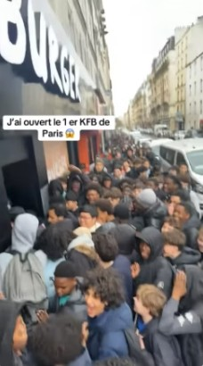
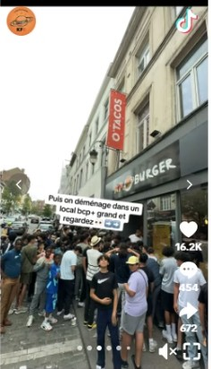
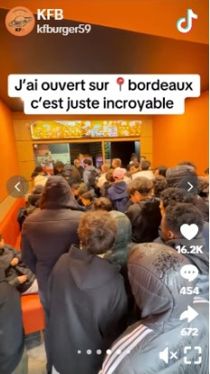

🌍

🕐 3. Executive Summary
🧭
Objectif : Déployer un réseau KF Burger en Île-de-France.
👉 Total : 9 restaurants en 2 ans
2026
4 restaurants
(lancement)
(lancement)
1
2
3
2027
+5 restaurants
(expansion)
(expansion)
♟️ Total
9 restaurants
en 2 ans
en 2 ans

🎯 VISION
👉 Construire un réseau structuré : ➡️ 9 à 10 restaurants en Île-de-France
9-10
Restaurants
en Île-de-France
2 ans
Délai
de déploiement
1
Région
stratégique ciblée

🔵 PHASE 2 — 2027
La phase 2 consolide le réseau et positionne le groupe comme acteur incontournable de la restauration rapide en Île-de-France.
1
Planification
Sélection des 5 emplacements
2
Aménagement
Travaux et conformité locale
3
Recrutement
Équipes formées et prêtes
4
Lancement
Ouvertures et communication
5
Optimisation
Suivi performance et scale
Le phénomène KF Burger, c'est pas du monde, c'est des foules.
Le restaurant KF BURGER de Saint-Denis, notre premier site, est le plus attendu en France


